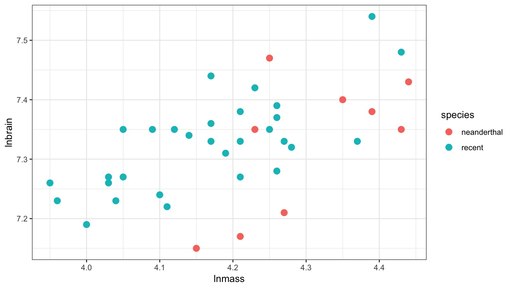
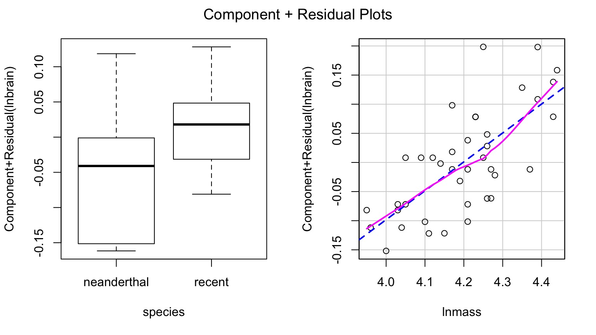
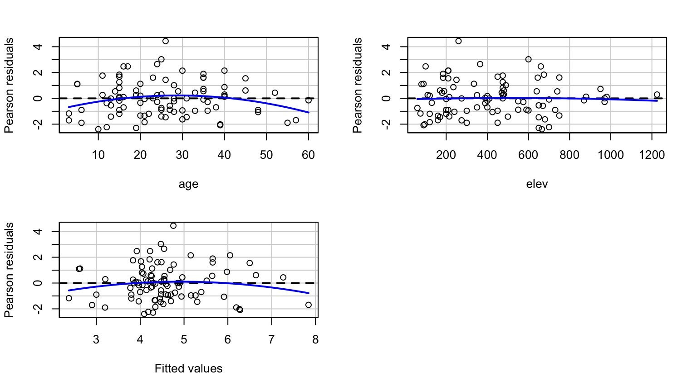
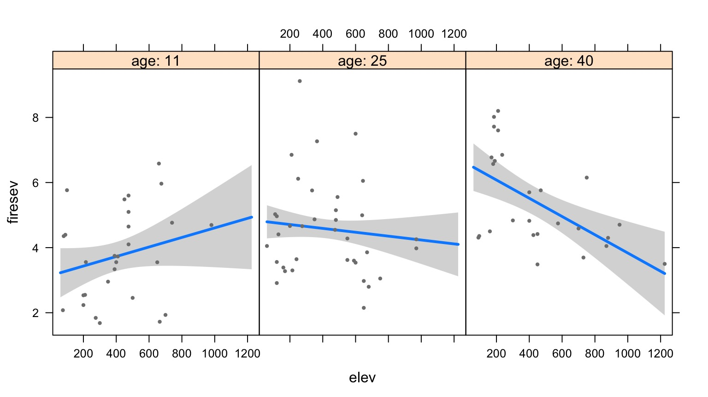

Multiple Predictor Variables in General Linear Models
Data Generating Processes Until Now
The General Linear Model
\[\Large \boldsymbol{Y} = \boldsymbol{\beta X} + \boldsymbol{\epsilon} \]
This equation is huge. X can be anything - categorical, continuous, squared, sine, etc.
There can be straight additivity, or interactions
So far, the only model we’ve used with >1 predictor is ANOVA
Models with Many Predictors
ANOVA
ANCOVA
Multiple Linear Regression
MLR with Interactions
Analysis of Covariance
\[\Large \boldsymbol{Y} = \boldsymbol{\beta X} + \boldsymbol{\epsilon}\]
\[Y = \beta_0 + \beta_{1}x + \sum_{j}^{i=1}\beta_j + \epsilon\]
Analysis of Covariance
\[Y = \beta_0 + \beta_{1}x + \sum_{j}^{i=1}\beta_j + \epsilon\]
- ANOVA + a continuous predictor
- Often used to correct for a gradient or some continuous variable affecting outcome
- OR used to correct a regression due to additional groups that may throw off slope estimates
- e.g. Simpson’s Paradox: A positive relationship between test scores and academic performance can be masked by gender differences
Neanderthals and ANCOVA

Who had a bigger brain: Neanderthals or us?
But there appears to be a Relationship Between Body and Brain Mass

And Mean Body Mass is Different
Analysis of Covariance (control for a covariate)

ANCOVA: Evaluate a categorical effect(s), controlling for a covariate (parallel lines)
Groups modify the intercept.
The Steps of Statistical Modeling
- What is your question?
- What model of the world matches your question?
- Build a test
- Evaluate test assumptions
- Evaluate test results
- Visualize
Assumptions of Multiway Anova
Independence of data points
Normality and homoscedacticity within groups (of residuals)
No relationship between fitted and residual values
Additivity of Treatment and Covariate (Parallel Slopes)
The Usual Suspects of Assumptions

Test for Parallel Slopes
We test a model where \[Y = \beta_0 + \beta_{1}x + \sum_{j}^{i=1}\beta_j + \sum_{k}^{i=1}\beta_{j}x + \epsilon\]
| species |
0.0275528 |
1 |
6.220266 |
0.0175024 |
| lnmass |
0.1300183 |
1 |
29.352684 |
0.0000045 |
| species:lnmass |
0.0048452 |
1 |
1.093849 |
0.3027897 |
| Residuals |
0.1550332 |
35 |
NA |
NA |
If you have an interaction, welp, that’s a different model - slopes vary by group!
Ye Olde F-Test
| species |
0.0275528 |
1 |
6.204092 |
0.0174947 |
| lnmass |
0.1300183 |
1 |
29.276363 |
0.0000043 |
| Residuals |
0.1598784 |
36 |
NA |
NA |
What type of Sums of Squares?
II!
Parcelling Out Covariate

Parcelling Out Covariate with PostHocs & Estimated Marginal Menas
| neanderthal - recent |
-0.07 |
0.028 |
36 |
-2.49 |
0.017 |
This is the difference between lines
What are the values at, say, mean log mass?
| neanderthal |
7.272 |
0.024 |
36 |
7.223 |
7.321 |
| recent |
7.342 |
0.013 |
36 |
7.317 |
7.367 |
How do the slopes differ?
| neanderthal |
0.496 |
0.092 |
36 |
0.31 |
0.682 |
| recent |
0.496 |
0.092 |
36 |
0.31 |
0.682 |
If there had been an interaction…
| neanderthal |
0.714 |
0.227 |
35 |
0.253 |
1.174 |
| recent |
0.454 |
0.100 |
35 |
0.251 |
0.657 |
| neanderthal |
0.714 |
0.227 |
35 |
0.253 |
1.174 |
| recent |
0.454 |
0.100 |
35 |
0.251 |
0.657 |
Differences in groups with an interaction
At lnmass = 3.9
| neanderthal |
7.036 |
0.094 |
35 |
6.846 |
7.227 |
| recent |
7.205 |
0.029 |
35 |
7.146 |
7.265 |
At lnmass = 4.4
| neanderthal |
7.393 |
0.031 |
35 |
7.329 |
7.457 |
| recent |
7.432 |
0.026 |
35 |
7.379 |
7.486 |
Models with Many Predictors
ANOVA
ANCOVA
Multiple Linear Regression
MLR with Interactions
One-Way ANOVA Graphically

Multiple Linear Regression?

Note no connection between predictors, as in ANOVA. This is ONLY true ifwe have manipulated variables so that there is no relationship between the two. This is not often the case!
Multiple Linear Regression

Curved double-headed arrow indicates COVARIANCE between predictors that we must account for.
MLR controls for the correlation - estimates unique contribution of each predictor.
Calculating Multiple Regression Coefficients with OLS
\[\boldsymbol{Y} = \boldsymbol{b X} + \boldsymbol{\epsilon}\]
Remember in Simple Linear Regression \(b = \frac{cov_{xy}}{var_{x}}\)?
In Multiple Linear Regression \(\boldsymbol{b} = \boldsymbol{cov_{xy}}\boldsymbol{S_{x}^{-1}}\)
where \(\boldsymbol{cov_{xy}}\) is the covariances of \(\boldsymbol{x_i}\) with \(\boldsymbol{y}\) and \(\boldsymbol{S_{x}^{-1}}\) is the variance/covariance matrix of all Independent variables
Five year study of wildfires & recovery in Southern California shurblands in 1993. 90 plots (20 x 50m)
(data from Jon Keeley et al.)
What causes species richness?
- Distance from fire patch
- Elevation
- Abiotic index
- Patch age
- Patch heterogeneity
- Severity of last fire
- Plant cover
Many Things may Influence Species Richness
Our Model
\[Richness =\beta_{0} ̃+ \beta_{1} cover +\beta_{2} firesev + \beta_{3}hetero +\epsilon\]
Testing Assumptions
- Data Generating Process: Linearity
- Error Generating Process: Normality & homoscedasticity of residuals
- Data: Outliers not influencing residuals
- Predictors: Minimal multicollinearity
Checking for Multicollinearity: Correlation Matrices
cover firesev hetero
cover 1.00000 -0.437135 -0.168378
firesev -0.43713 1.000000 -0.052355
hetero -0.16838 -0.052355 1.000000
Correlations over 0.4 can be problematic, but, they may be OK even as high as 0.8.
Beyond this, are you getting unique information from each variable?
Checking for Multicollinearity: Variance Inflation Factor
- Consider \(y = \beta_{0} + \beta_{1}x_{1} + \beta_{2}x_{2} + \epsilon\)
- And \(X_{1} = \alpha_{0} + \alpha_{2}x_{2} + \epsilon_j\)
- \(var(\beta_{1}) = \frac{\sigma^2}{(n-1)\sigma^2_{X_1}}\frac{1}{1-R^{2}_1}\)
\[VIF = \frac{1}{1-R^2_{1}}\]
Checking for Multicollinearity: Variance Inflation Factor
\[VIF_1 = \frac{1}{1-R^2_{1}}\]
cover firesev hetero
1.2949 1.2617 1.0504
VIF \(>\) 5 or 10 can be problematic and indicate an unstable solution.
Solution: evaluate correlation and drop a predictor
Other Diagnostics as Usual!
Examine Residuals With Respect to Each Predictor

Which Variables Explained Variation: Type II Marginal SS
| cover |
1674.18 |
1 |
12.01 |
0.00 |
| firesev |
635.65 |
1 |
4.56 |
0.04 |
| hetero |
4864.52 |
1 |
34.91 |
0.00 |
| Residuals |
11984.57 |
86 |
NA |
NA |
If order of entry matters, can use type I. Remember, what models are you comparing?
What’s Going On: Type I and II Sums of Squares
|
Type I |
Type II |
|
| Test for A |
A v. 1 |
A + B v. B |
|
| Test for B |
A + B v. A |
A + B v. A |
|
- Type II more conservative for A
The coefficients
| (Intercept) |
1.68 |
10.67 |
0.16 |
0.88 |
| cover |
15.56 |
4.49 |
3.47 |
0.00 |
| firesev |
-1.82 |
0.85 |
-2.14 |
0.04 |
| hetero |
65.99 |
11.17 |
5.91 |
0.00 |
R2 = 0.40986
Comparing Coefficients on the Same Scale
\[r_{xy} = b_{xy}\frac{sd_{x}}{sd_{y}}\]
cover firesev hetero
0.32673 -0.19872 0.50160
Visualization of 4-D Multivariate Models is Difficult!

Component-Residual Plots Aid in Visualization
Takes effect of predictor + residual of response
Added Variable Plot to Show Unique Contributions when Holding Others Constant

Or Show Predictions Overlaid on Data
Models with Many Predictors
ANOVA
ANCOVA
Multiple Linear Regression
MLR with Interactions
Problem: What if Continuous Predictors are Not Additive?

Problem: What if Continuous Predictors are Not Additive?
Problem: What if Continuous Predictors are Not Additive?
Model For Age Interacting with Elevation to Influence Fire Severity
\[y = \beta_0 + \beta_{1}x_{1} + \beta_{2}x_{2}+ \beta_{3}x_{1}x_{2}\]
Testing Assumptions
- Data Generating Process: Linearity
- Error Generating Process: Normality & homoscedasticity of residuals
- Data: Outliers not influencing residuals
- Predictors: Minimal collinearity
Other Diagnostics as Usual!

Examine Residuals With Respect to Each Predictor

Interactions, VIF, and Centering
age elev age:elev
3.2001 5.5175 8.2871
This isn’t that bad. But it can be.
Often, interactions or nonlinear derived predictors are collinear with one or more of their predictors.
To remove, this, we center predictors - i.e., \(X_i - mean(X)\)
Interpretation of Centered Coefficients
\[\huge X_i - \bar{X}\]
- Additive coefficients are the effect of a predictor at the mean value of the other predictors
- Intercepts are at the mean value of all predictors
- Visualization will keep you from getting confused!
Interactions, VIF, and Centering
\[y = \beta_0 + \beta_{1}(x_{1}-\bar{x_{1}}) + \beta_{2}(x_{2}-\bar{x_{2}})+ \beta_{3}(x_{1}-\bar{x_{1}})(x_{2}-\bar{x_{2}})\]
Variance Inflation Factors for Centered Model:
age_c elev_c age_c:elev_c
1.0167 1.0418 1.0379
F-Tests to Evaluate Model
What type of Sums of Squares??
| age |
52.9632 |
1 |
27.7092 |
0.00000 |
| elev |
6.2531 |
1 |
3.2715 |
0.07399 |
| age:elev |
22.3045 |
1 |
11.6693 |
0.00097 |
| Residuals |
164.3797 |
86 |
NA |
NA |
Coefficients!
| (Intercept) |
1.81322 |
0.61561 |
2.9454 |
0.00415 |
| age |
0.12063 |
0.02086 |
5.7823 |
0.00000 |
| elev |
0.00309 |
0.00133 |
2.3146 |
0.02302 |
| age:elev |
-0.00015 |
0.00004 |
-3.4160 |
0.00097 |
R2 = 0.32352
Note that additive coefficients signify the effect of one predictor in the abscence of all others.
Centered Coefficients!
| (Intercept) |
4.60913 |
0.14630 |
31.5040 |
0.00000 |
| age_c |
0.05811 |
0.01176 |
4.9419 |
0.00000 |
| elev_c |
-0.00068 |
0.00058 |
-1.1716 |
0.24460 |
| age_c:elev_c |
-0.00015 |
0.00004 |
-3.4160 |
0.00097 |
R2 = 0.32352
Note that additive coefficients signify the effect of one predictor at the average level of all others.
Interpretation
- What the heck does an interaction effect mean?
- We can look at the effect of one variable at different levels of the other
- We can look at a surface
- We can construct counterfactual plots showing how changing both variables influences our outcome
Age at Different Levels of Elevation

Elevation at Different Levels of Age

Surfaces and Other 3d Objects

Or all in one plot

Without Data and Including CIs

A Heatmap Approach


We can do a lot with the general linear model!
You are only limited by the biological models you can imagine.